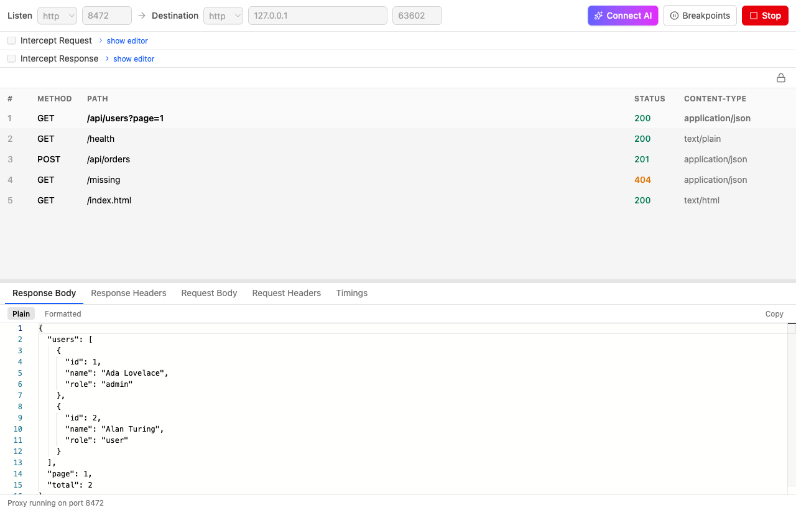
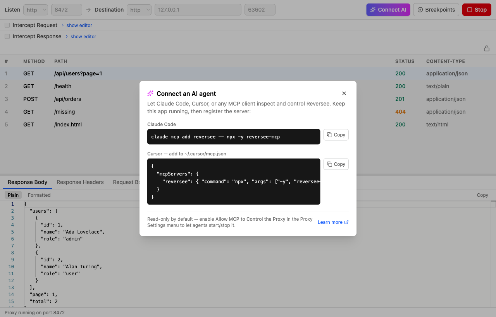

See, intercept, and edit your HTTP traffic.
Built for humans and AI agents.
Reversee is an open-source reverse-proxy web debugger. Point your client at it and inspect every request and response — headers, bodies, timings — then rewrite or breakpoint them on the fly. And let AI agents do it too, over MCP.

Everything you need to debug traffic
A focused, modern UI over a proxy that gets out of your way.
HTTP & HTTPS
Listen and forward on either protocol. HTTPS uses a locally generated root CA you trust once.
Traffic inspection
Method, path, status, content type, headers, request/response bodies (syntax-highlighted), and timings.
Interceptors
Rewrite requests or responses with a few lines of JavaScript — change headers, bodies, anything.
Breakpoints
Hold requests matching a URL pattern, edit the URL, headers, and body, then continue.
Redirect & host rewriting
Keep redirect chains and Host headers pointed back at the proxy so flows just work.
Copy as curl & export
Reproduce any captured request as a curl command, and export diagnostics in a click.
✨ Made for AI agents
Reversee ships an MCP server, so Claude Code, Cursor, or any MCP client can inspect and control the proxy. Agents can debug your traffic for you — or run Reversee headless as part of an automation.
list_traffic and get_traffic_entry are always safe; starting/stopping the proxy needs an explicit opt-in.reversee --headless --allow-mcp-control runs with no UI for agents and CI.Claude Code
claude mcp add reversee -- npx -y reversee-mcp
Cursor — ~/.cursor/mcp.json
{
"mcpServers": {
"reversee": { "command": "npx", "args": ["-y", "reversee-mcp"] }
}
}

Get going in under a minute
Install, point your client at it, and watch the traffic.
Install & launch Reversee
Download a build, or brew install --cask galusben/reversee/reversee.
Set the listen and destination
e.g. listen on http:8080, forward to https://api.example.com. Click Start.
Send a request
curl http://localhost:8080/api/users — it appears in the table; click it to inspect.
Intercept, breakpoint, or hand it to an agent
Rewrite a response in JS, hold a request to edit it, or connect Claude Code to do it for you.
Install
Signed and notarized on macOS. Updates itself from GitHub Releases.
macOS — Homebrew
brew tap galusben/reversee brew install --cask reversee
macOS / Linux — one-liner
curl -fsSL https://raw.githubusercontent.com/\ galusben/reversee/main/install.sh | bash